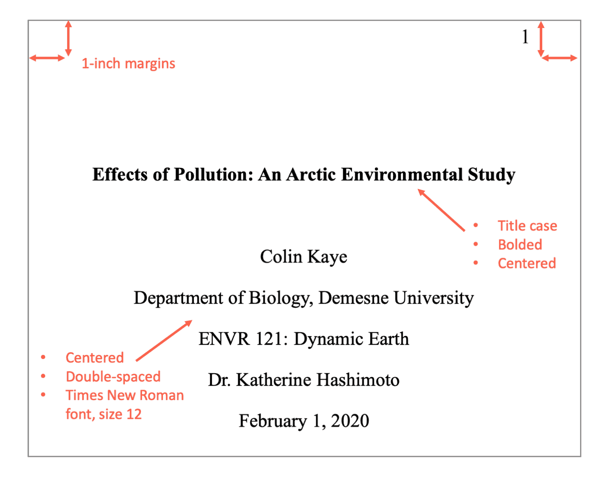

Chapter 8 Edición y preparación del manuscrito
8.1 Los metadatos

La portada de un trabajo deberá incluir la siguiente información:
- Título
- Autores
- Afiliación
- Resumen
- Palabras Clave
8.2 Título, resumen y palabras clave
Estos tres campos son esenciales para visibilizar un trabajo científico. Aquí hay que tener en cuenta las siguientes variables:
- Sintético y al grano
- Atractivo y sexy. Que llame la atención del lector (lo más cercano a un clickbait pero de manera ética y honesta)
- Con los conceptos esenciales para que pueda ser recuperado por los lectores
Tipos de títulos:
- Informativo. Ejemplo: Map of synthetic rescue interactions for the Fanconi anemia DNA repair pathway identifies USP48
- Explicativo. Ejemplo: Planning a title: Practices and preferences for titles with colons in academic articles
- Atractivo. Ejemplo: The unbearable emptiness of tweeting – About journal articles
- Intrigante. Ejemplo: What is an emerging technology?
Tips:
- Prueba a hacer búsquedas en Google Scholar para identificar términos relevantes que deban aparecer en tu trabajo.
- Invierte tiempo en escribir un buen abstract que sintetice y refleje la estructura del paper. Seguramente será lo único que la mayoría de la gente lea.
8.3 Formatos de revista y plantillas
Aunque no siempre es posible, es importante tener clara relativamente pronto la revista a la que se enviará el documento, o al menos la comunidad académica, ya que esto servirá para guiarnos sobre el tono, el estilo de escritura y el formato de la revista.
Algunos ejemplos de formatos según la revista:
Algunas revistas cuentan con plantillas para que puedas enviar el artículo maquetado, aunque esto no suele ser lo habitual ni tampoco imprescindible: